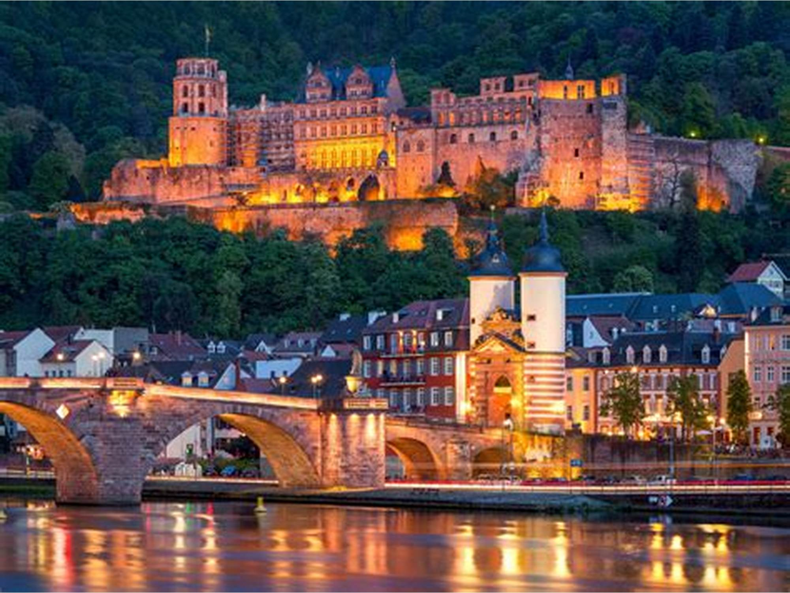

My Experience Traveling the World
"Life is short, the world is wide, and I wanna make some memories." - Mamma Mia 2
By Kaylie Peebles
Traveling around the world is one of the most rewarding experiences life has to offer, and has taught me many lessons about the world's cultures and humanity as a whole. It allowed me to step out of my daily routines and immerse myself in the beauty and diversity of our amazing planet. Every journey, whether it was to a bustling city or a serene island, offered an opportunity to expand my horizons, foster personal growth, and create memories that will last a lifetime. The world is vast, and its variety of cultures, landscapes, and histories makes it an endlessly fascinating place to explore.A Few Places I have Traveled:
I have had the opportunity to travel to some amazing and beautiful places. One of the greatest aspects of world travel is the chance to experience different cultures firsthand. Visiting these countries introduced me to unique traditions, languages, and ways of life. Tasting local cuisine, participating in local traditions, or simply engaging in conversations with the people fostered a deeper appreciation for humanity's diversity. Such experiences reminded me that while our customs may differ, the core of human nature is universal. Here are a couple of my favorite places and things I did!
This is a box!
- Petra, Jordan
- Riding a Camel in front of the Treasury.
- Hiking up 100's of stairs to make it to the Monastery.
- Visiting old ruins and castles.

- Positano, Italy
- Eating the amazing cuisine near the beach, including lemon ice cream.
- Shopping in the adorable stores.
- THE VIEWS

- Heidelberg, Germany
- 
- Taking a walk down the river in the middle of town.
- Exploring the castle right by our hotel.
- Trying the most amazing burger I have ever had.
The natural beauty encountered while traveling is another highlight of exploring the globe.
From the serene beaches of the Maldives to the towering peaks of the Himalayas, nature’s wonders never fail to inspire awe. Traveling allows us to witness the incredible variety of ecosystems, from lush rainforests to arid deserts. These experiences not only provide stunning photo opportunities but also remind us of the importance of preserving the environment for future generations.World travel is also a journey of self-discovery and personal growth.
Navigating foreign environments challenges individuals to step out of their comfort zones and develop resilience, adaptability, and independence. Whether learning how to communicate in a new language, figuring out public transportation in a foreign city, or embracing unfamiliar customs, each challenge builds confidence and enriches the traveler's character.TRAVEL SAFELY!
When traveling, you want to make sure you travel somewhere YOU will feel comfortable. This is different for everybody, but here is a graph that shows safer and more un-safe places to visit!
Moreover, traveling creates unforgettable memories that stay with us for a lifetime.
The excitement of discovering a hidden gem in a foreign city, the warmth of strangers who offer help, or the joy of reconnecting with friends in faraway places becomes a treasure trove of stories to share. These moments remind us of the beauty of human connection and the adventures waiting beyond our front doors.Here is a YouTube video that inspired me and kick-started my love for traveling!
In conclusion, traveling around the world is a gift that enriches the mind, soul, and heart.
It opens doors to new experiences, celebrates cultural diversity, and fosters personal growth. Whether wandering the streets of Paris, trekking through the Amazon, or savoring street food in Bangkok, every journey adds a new chapter to the story of our lives. The world is waiting, and there is no better time than now to explore it. I love Positano, Italy.Jump to top